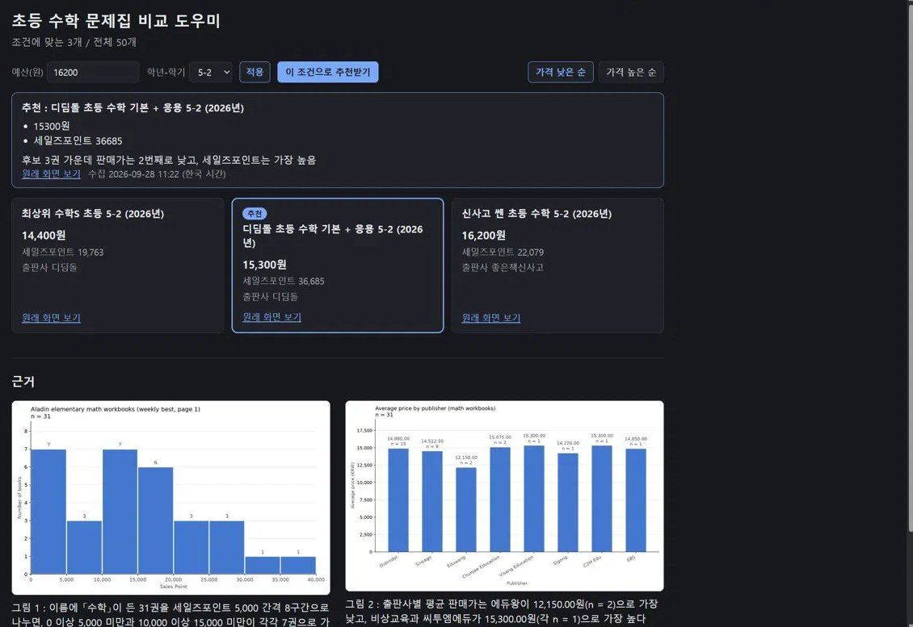
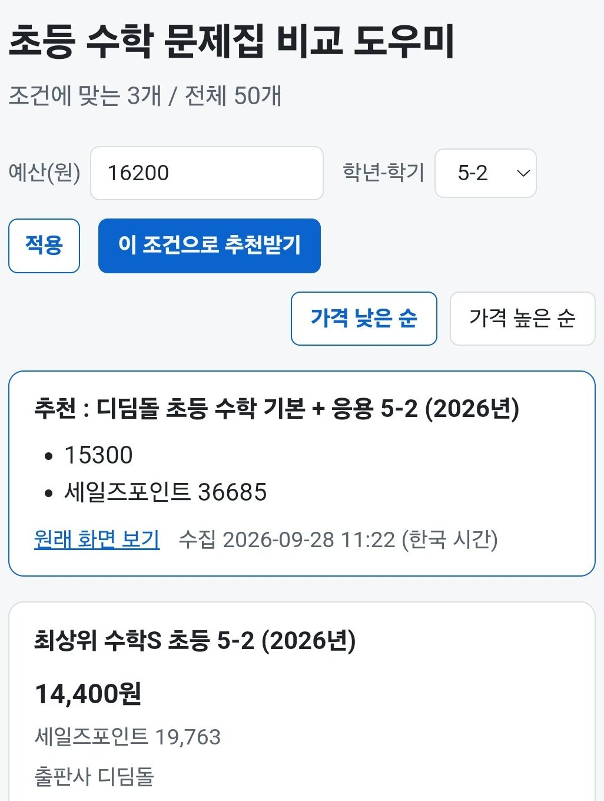

초등 수학 문제집 비교 도우미
초등 5학년 아이의 2학기 수학 문제집을 고르는 학부모를 위해, 알라딘 주간 베스트에서 모은 문제집을 조건에 맞춰 나란히 보여 주고 AI가 한 권을 추천하는 화면입니다. 강사가 준 미션 23개를 차례로 따라가며 데이터 수집부터 화면, AI 추천, 이용 측정까지 한 번씩 해 본 과정이었습니다.


- 구분
- 멀티캠퍼스 AI 프로덕트 매니저 트랙 · 실습 미션
- 역할
- 수집 범위 정하기, 모은 값과 원래 화면 대조, 화면 테스트. 코드는 Claude Code가 작성
- 기간
- 2026.09.28~30 (3일)
- 도구
- Python · Vercel · Gemini API · 구글 태그 관리자 · GA4 · Claude Code
- 결과
- 알라딘 이용약관을 지켜 주간 베스트 50권 수집 · 수학 문제집 31권 비교 화면 · AI 추천 · 이용 측정 이벤트 3개
AI가 쓴 추천 이유에 근거를 붙였습니다
추천 이유는 AI가 쓰게 했습니다. 처음 시험해 보니 숫자 하나 없이 "다른 후보들보다 가격이 더 알맞고 합리적입니다"라는 이유가 나왔는데, 그 책은 세 후보 중 가운데 가격이었습니다. 이유 속 숫자가 그 책의 값과 맞는지 자동으로 확인하게 해 두었지만, 숫자가 없는 문장은 확인할 것이 없어 그대로 통과했습니다. 그래서 첫 줄에는 판매가, 둘째 줄에는 알라딘이 책마다 매기는 점수인 세일즈포인트를 쓰고, "합리적" 같은 판단하는 말은 쓰지 않게 지시를 바꿨습니다.
그러자 옆자리 수강생에게 써 보게 했을 때 "왜 이 책인지 추천한 이유가 안 보여요"라는 말이 나왔습니다. 휴대폰에서 같은 책이 두 번 겹쳐 보이는 문제도 있었지만, 한 곳만 고치는 미션이라 이 말을 먼저 고쳤습니다. 지시를 다시 풀면 근거 없는 문장이 돌아올 수 있어서, AI 지시는 그대로 두고 화면이 데이터에서 직접 센 등수 한 줄을 이유 아래에 더했습니다. "후보 3권 가운데 판매가는 2번째로 낮고, 세일즈포인트는 가장 높음" 같은 문장입니다. AI가 쓰는 문장이 아니라서 지어낼 수 없습니다.